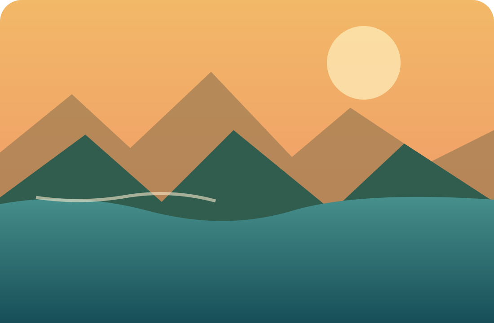

LIVINGSTONE · ZAMBIA · 17°51' S
Closer to
the wild.
A little less itinerary. A little more wonder. Thoughtful journeys shaped around the river, the falls and the people who call this place home.
Small groups · Local guides · Flexible days

at first light
24° 25′ E
01 / OUR POINT OF VIEW
Travel that leaves
room to feel.
Some places ask you to do everything. We think the best days make space for the unexpected: the river turning gold, a guide's story, the long pause before a bird takes flight.
Our way of travelling ↗02 / CHOOSE YOUR MOMENT
Wild, in your
own rhythm.
03 / TAKE THE LONG WAY
“The best souvenir is a moment you didn't plan.”
Illustrative guest note · Fictional testimonial
Find your journey ↗04 / MADE OF PLACE
Rooted here.
Open to everywhere.
We build journeys with this landscape in mind: changing water levels, seasonality, travel time and the importance of listening to local knowledge.
Read the field guide ↗YOUR DAYS, YOUR WAY
Let's make a little
room for wonder.
Tell us your dates, your pace and what you'd love to experience.
Fictional portfolio concept. Contacts, rates, schedules and guest stories are illustrative. No real bookings are made.